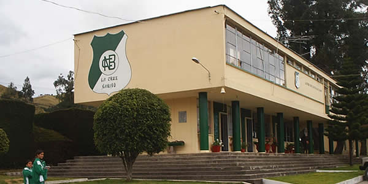
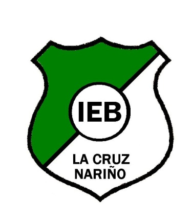
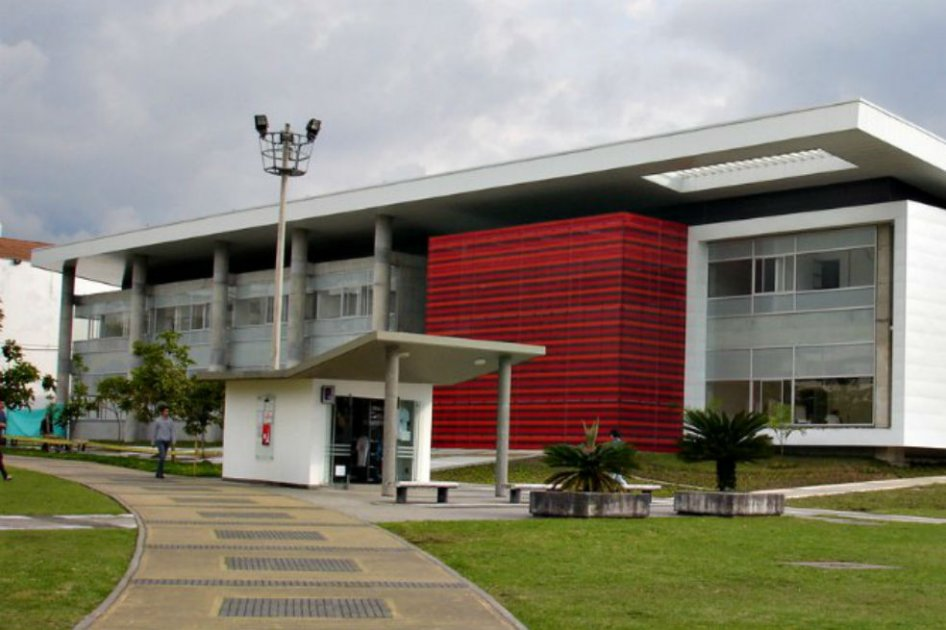
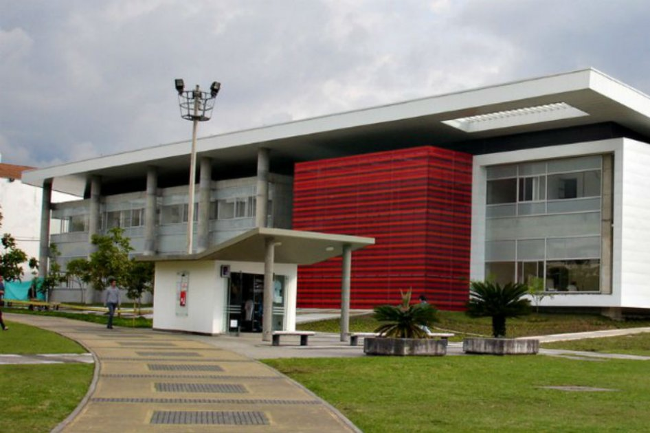

Estudios
Básica primaria
Mis primeros estudios fueron en la Escuela "Centro Educativo La Estancia" desde pequeño fui muy juicioso y tuve la oportunidad de cursar mis primeros 5 años en esta escuela donde aprendí mucho.

Básica Secundaria
Mis estudios continuaron en el 2012 en el colegio llamado "Institución Educativa de Bachillerato" ubicado en la Cruz Nariño donde pase 6 años con gran excelencia y disciplina, llegué a el ultimo grado en el 2018 y tuve la fortuna de graduarme con honores, y rodeado de unos excelentes compañeros.

Universidad
Siempre tuve la actitud para salir adelante y poder estudiar en una Universidad y tener una educación de Calidad y mi proceso para entrar a esta universidad no fue nada fácil, Me postule en 2019 en el segundo periodo académico y tuve la gran fortuna de estar elegido entre los últimos en el programa de Administración de Sistemas de información en una de las mejores universidades de Colombia, la Universidad Nacional de Colombia sede Manizales, lugar donde he aprendido mucho y he crecido como persona, rodeado de grandes compañeros. Actualmente estoy cursando el Sexto Semestre y espero terminar mi carrera y especializarme en Desarrollo de Software, y tambien me gustaria sumergirme un poco en el tema del Hacking Etico.
 
Mi horario dia a dia lo resumo en la siguiente tabla: :)
| Lunes | Martes | Miercoles | Jueves | Viernes |
|---|---|---|---|---|
| Ingles | Algoritmos | Programación TWEB | Algoritmos | Cero |
| Programación TWEB | Tendencias | B_Datos | Ingles | Clases |
| Auditoria | B_Datos | Tendencias | ||
| Auditoria |